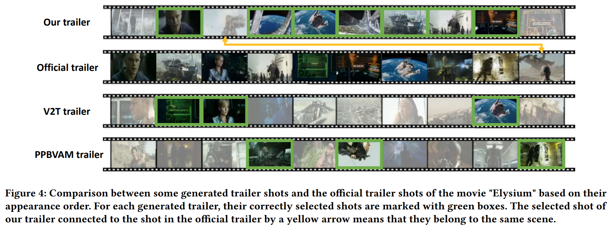
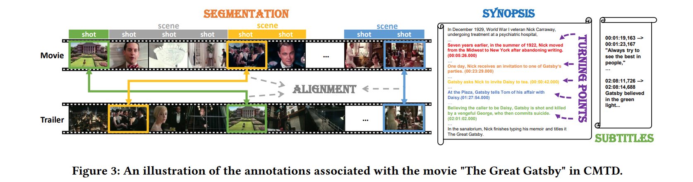

Gallery

Comparisons between some generated trailers of various methods and the official trailer.
Trailer generation is a challenging video clipping task that aims to select highlighting shots from long videos like movies and re-organize them in an attractive way. In this study, we propose an inverse partial optimal transport (IPOT) framework to achieve music-guided movie trailer generation. In particular, we formulate the trailer generation task as selecting and sorting key movie shots based on audio shots, which involves matching the latent representations across visual and acoustic modalities. We learn a multi-modal latent representation model in the proposed IPOT framework to achieve this aim. In this framework, a two-tower encoder derives the latent representations of movie and music shots, respectively, and an attention-assisted Sinkhorn matching network parameterizes the grounding distance between the shots' latent representations and the distribution of the movie shots. Taking the correspondence between the movie shots and its trailer music shots as the observed optimal transport plan defined on the grounding distances, we learn the model by solving an inverse partial optimal transport problem, leading to a bi-level optimization strategy. We collect real-world movies and their trailers to construct a dataset with abundant label information called CMTD and, accordingly, train and evaluate various automatic trailer generators. Compared with state-of-the-art methods, our IPOT method consistently shows superiority in subjective visual effects and objective quantitative measurements.
...
 Comparisons between some generated trailers of various methods and the official trailer.
The project page template is borrowed from DreamBooth.